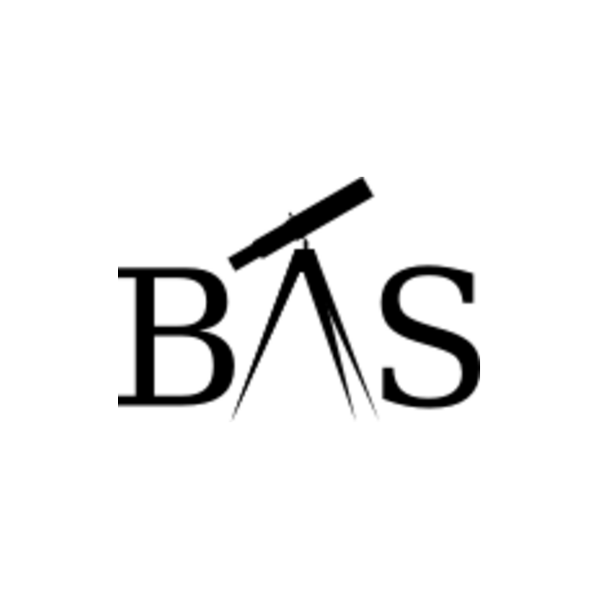

Bangalore Astronomical Society
Observing Campaign • 3 November 2026
BENGALURU CONTACT TIMINGS (IST)
Contact I — Ingress Starts
First touch at Moon's bright limb (Alt 19.7°)
02:28:56
Contact II — Full Ingress
Jupiter fully disappears (Alt 20.3°)
02:31:31
Mid-Occultation — Max Depth
Separation: 14.0 arcminutes (Alt 23.8°)
02:46:13
Contact III — Egress Starts
Jupiter emerges from dark limb (Alt 27.5°)
03:01:27
Contact IV — Full Egress
Full occultation ends (Alt 28.2°)
03:04:12
Scan or Visit to Join Us:
https://bas.org.in
Observing guides, live sessions, and community forums.